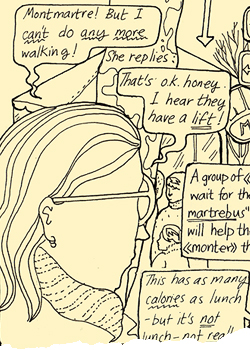

 image: badaude“The white winter sunshine makes it warm enough for tourists and locals to sit outside the cafe on the Place des Abbesses”
I’ve always found Sunday the most difficult day to be in Paris. The day where you really have to be a Parisien to fit in. The day when all the French disappear from the streets. Unlike most Anglo-Saxon countries, the metal shutters are down on almost all the shops. In a city which celebrates eating out and just being out, all the best bars, cafes and restaurants are closed because everyone’s dining chez Mamie.[1]
I’m in Montmartre. The white winter sunshine makes it warm enough for tourists and locals to sit outside the cafe on the Place des Abbesses.[2] There’s a Breton market.[3] People in fancy dress handing out samples of Koug Anan, the Breton speciality, which seems to be formed from a huge, compacted croissant, soaked in syrup. Outside the Grenier à Pain bakery on rue des Abesses, whose windows are piled high with different varieties of pain d’epices,[4] there’s a huge queue for fougasses.[5] I’m with someone. And this is where we have a quarrel.
It’s a Sunday quarrel. It’s not about anything. There’s none of the urgency of a weekday argument. I say, do you want to have lunch? He says, I’m not hungry. Are you? I say, Not really. I am hungry and tired from being at the Clignancourt market[6] early this morning. But after a large, late dinner last night I somehow don’t want to admit to being hungry again so soon. He says, Ok, lets just get something from the bakery. So we queue. And queue. I want to sit down (We could get fougasses and sit at the cafe next door. Look - they’re doing it. No-one minds). But we’re at the front of the line and he says, Look, she wants to serve you. And I know that already, but I have to turn away from her to hear what’s he’s saying. And at the same time the serveuse[7] says, Qu’est-ce que vous vouliez, Madame?[8] and I’m looking at the choice of fougasses and I have to turn again to say to him, Which one do you want? and he says, I don’t know. He takes his time … Maybe the one with lardons.[9] So I say, Une fougasse avec lardons, s’il vous plait, Madame,[10] and he says, Aren’t you having anything? But there’s no time to ask for anything else as by this time I’m paying. And then we’re walking down the street and I’m hungry and he’s not and he has the fougasse with lardons.
So I say, Didn’t you have some work to do? You could go and finish it if you like. I’ll go for a walk. And, as we try to find the entrance to the metro disguised by the fake Breton stalls I say, You’re not angry with me, are you?
In Place des Abbesses, there’s the “Mur des je t’aime”[11] created by Frederic Baron in 2000. I scan it as he goes down into the metro. It’s blue. Its tiles are made of lava. Something hot and red solidified a long time ago. The phrases escape and scrawl themselves across the boundaries of the tiles, each in a different calligraphy; each written by a different person. Their differences prove the reality of the sentiment; each real and specific to a person, a relationship. The wall says, “I love you” in 80 languages. I can’t even say it in one.
referenced works
- Casual French for “at grandma’s house.” ↩
- A central square in Montmartre, the famed hill in northern Paris that was once a village unto itself, before its incorporation into the city in 1860. ↩
- See “Bretagne” http://en.wikipedia.org/wiki/Bretagne ↩
- Gingerbread ↩
- A French version of focaccia. ↩
- The Clignancourt marché aux puces (flea market) is the largest and most well-known in Paris, home to miles of merchants selling the whole range of knick knacks, from antique treasures to crap no one needs. ↩
- Waitress ↩
- What would you like, ma’am ↩
- Small cubes of smoked ham ↩
- “A French version of focaccia with bits of smoked ham, please” ↩
- Wall of “I Love You"s ↩
location information
- Name: Place des Abbesses
- Address: Place des Abbesses Paris 75018
- Time of story: Afternoon
- Latitude: 48.886081
- Longitude: 2.337942
- Map: Google Maps
017 “I opened the hip high gate and found a green wooden bench in the shade”
016 “I didn't know what it was she had that I wanted.”
015 “She was still there, with her shining coat of orange and the green belt of the RER C at her feet.”
014 “Paris is its own reason.”
013 “Gilded angels taking off from Châtelet, Bastille, Invalides”
012 “A dialogue out of nowhere and from the 5th dimension”
011 “I started screaming New York-style obscenities.”
010 “Her soul is okay though, she’s just received Holy Communion at Saint-Nicolas, one station before”
009 “It felt like if things continued the way they were, my body would disintegrate”
008 “It reminded me of an Yves Saint Laurent dress, of mermaids and of Christmas”
007 “I felt a sense of relief as I experienced the rare soothing absence of fluorescent light”
006 “My fist flew wildly and connected with the warm Parisian evening air”
005 “Someone handed me a plastic cup of white wine and I sipped it so I didn’t have to make conversation”
004 “The white winter sunshine makes it warm enough for tourists and locals to sit outside the cafe on the Place des Abbesses”
003 “Two cans of beer in the thin plastic bag”
002 “Je ne suis pas une femme facile”
001 “His guitar was underscoring my morning ride beyond Gare du Nord through the graffitied suburbs”

{kind=link}
Write for Us!
We’re looking for short narratives describing pivotal moments of elation, confusion, absurdity, love or grief — or anything in between — inseparably tied to a specific place in Paris.
Paris:
Or receive updates by email
Addresses only used for the occational hitotoki mailing. Otherwise stored on the 4th floor of Tokyo Tower.
A list of all available RSS feeds is on the about page
commentary